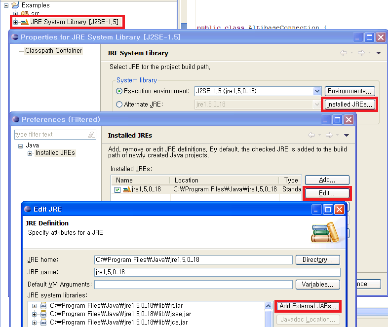

This chapter describes how to set the ALTIBASE JDBC Driver.
How to set up in the project (Eclipse)
How to add ALTIBASE JDBC Driver to the project in the Eclipse is as follows.
Project - JRE System Library - Properties - Installed JREs - Click jre among the items - Edit - Click Add External JARs and add the ALTIBASE JDBC Driver Altibase.jar.


How to set up in the web application
If the web application is implemented, the ALTIBASE JDBC Driver can be set in two methods.
The first method is to place the Altibase.jar file in the appropriate directory of each web server, so that all web applications can use the ALTIBASE JDBC Driver globally. This method can be used (refer to the integration guide for each web server).
Another method is to set up the ALTIBASE JDBC Driver only in the web application. If the ALTIBASE JDBC Driver is used in the web application, Altibase.jar can be placed in the following location.
Web_application\WEB-INF\lib |
If the project is created with Eclipse as Web Project, Altibase.jar is located in the following directory.
project\WebContent\WEB-INF\lib |
{kind=link}
{kind=link}